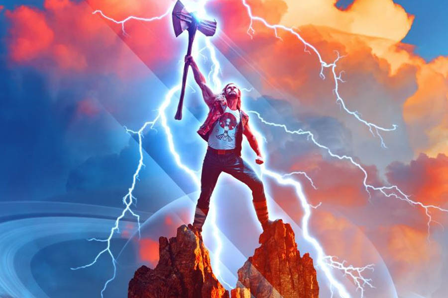
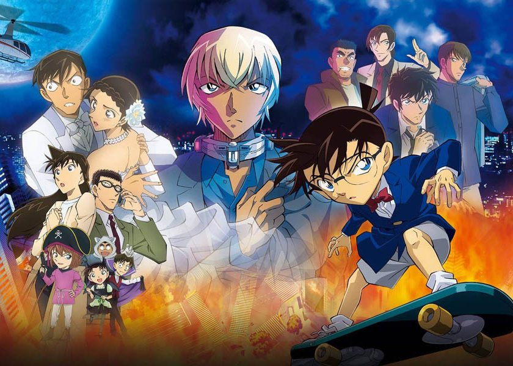

Estrenos infantiles de julio de 2022: películas y series
Los mejores estrenos familiares en cines.
por Lionel Marrero
En este artículo queremos hacer un repaso de los estrenos infantiles de julio de 2022 más esperados. Y es que ya se nota que llega el verano y en las salas de cine abundarán películas para toda la familia. A continuación quiero hablar de series y películas familiares que en julio de 2022 llegan a las salas de cines. Si quieres conocer cuáles son sigue leyendo. Estamos seguros de que pondrás algunas de ellas en el radar.
Minions: Nace un Villano: 1 de julio
Son los años 70 y Gru crece en un barrio residencial, en pleno boom de los peinados cardados y los pantalones de campana. Como fan incondicional de un famoso supergrupo de villanos, ‘Los salvajes seis’, Gru idea un plan para demostrarles que es lo suficientemente malvado como para trabajar con ellos. Por suerte, cuenta con la ayuda de sus fieles seguidores, los Minions, siempre dispuestos a sembrar el caos. Juntos, Kevin, Stuart, Bob, y Otto -un nuevo Minion con aparato en los dientes y desesperado por sentirse aceptado- desplegarán su potencial para construir junto a Gru su primera guarida, experimentar con sus primeras armas y llevar a cabo sus primeras misiones. Sin duda hablamos de una de las grandes opciones familiares si hablamos de estrenos infantiles de julio de 2022 en cartelera.
Thor: Love and Thunder: 8 de julio
En “Thor: Love and Thunder” de Marvel Studios, el Dios del Trueno (Chris Hemsworth) emprende un viaje que no se parece en nada a lo que se ha enfrentado hasta ahora: una búsqueda de la paz interior.
Pero el retiro de Thor se ve interrumpido por un asesino galáctico conocido como Gorr el Carnicero de Dioses (Christian Bale), que busca la extinción de los dioses. Para hacer frente a la amenaza, Thor solicita la ayuda del Rey Valkiria (Tessa Thompson), de Korg (Taika Waititi) y de su ex novia Jane Foster (Natalie Portman) que, para sorpresa de Thor, empuña inexplicablemente su martillo mágico, Mjolnir, como la Poderosa Thor.
Juntos, se embarcan en una aventura cósmica en la que tendrán que descubrir el misterio de la venganza del Carnicero de Dioses y detenerlo antes de que sea demasiado tarde. Para muchos es uno de los grandes estrenos de julio de 2022 en cines.
Crítica a Thor: Love and Thunder
Detective Conan: La novia de Halloween: 8 de julio
La historia gira en torno a la boda de los Detectives Sato y Takagi, la cual se ve interrumpida por un asalto del que acaba llevándose lo peor este último. Mientras tanto, se produce una fuga de cárcel en la que está involucrando el perpetrador de un atentado, y Rei Furuya se cruza con una misteriosa persona disfrazada que acaba poniéndole un collar explosivo. A medida que Conan y los suyos empiezan a investigar todos los hechos, se convierten en el objetivo de un grupo muy peculiar. Una gran opción familiar, al igual que la película de los Minions, entre los estrenos infantiles de julio de 2022.
Padre no hay más que uno 3: 15 de julio
Se acercan las Navidades. Los niños rompen accidentalmente una figurilla del Belén de colección de su padre y deben conseguir por todos los medios una igual, el problema es que es una pieza única de anticuario. Sara, la hija mayor rompe con su novio, Ocho, que intentará recuperar sus favores con la ayuda de su suegro, Javier. Precisamente el suegro de Javier, el padre de Marisa, será acogido en la casa familiar para pasar las fiestas tras su reciente separación, lo cual no dejará indiferente a la madre de Javier, Milagros. Rocío, la folclórica de la familia, que hacía de Virgen desde hace varias Navidades, es relegada este año a hacer de pastorcilla, algo que su padre, Javier, no está dispuesto a asumir. Otra gran opción familiar entre los estrenos infantiles de julio de 2022 en cines.
La princesa Mononoke: 22 de julio
La obra maestra de Studio Ghibli vuelve a los cines para que podamos disfrutarla como se merece: en pantalla grande. En La Princesa Mononoke, un joven príncipe, herido mortalmente por un demonio, viaja a un recóndito poblado para llevar a cabo una difícil misión: reconciliar a las dos mujeres responsables de la inminente destrucción del lugar.
DC Liga de supermascotas: 29 de julio

El perro de Superman se une al gato volador para impedir el crimen mientras Superman se va de vacaciones. Todo un disfrute para los fans de DC.
Hasta aquí el listado de los mejores estrenos infantiles de julio de 2022. Recuerda seguirnos para estar al día con todos los estrenos.